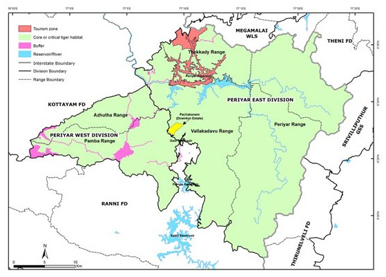

The Mullaperiyar Dam
Location

Mullaiperiyar Dam is a masonry gravity dam on the Periyar River in the Indian state of Kerala. It is located 881 m (2,890 ft) above mean sea level, on the Cardamom Hills of the Western Ghats in Thekkady, Idukki District of Kerala, South India. It was constructed between 1887 and 1895 by John Pennycuick to divert water eastwards to the Madras Presidency area (present-day Tamil Nadu). It has a height of 53.6 m (176 ft) from the foundation, and a length of 365.7 m (1,200 ft). The Periyar National Park in Thekkady is located around the dam's reservoir. The dam is located in Kerala on the river Periyar, but is operated and maintained by Tamil Nadu state. Although the Periyar River has a total catchment area of 5398 km2 with 114 km2 in Tamil Nadu, the catchment area of the Mullaperiyar Dam itself lies entirely in Kerala. By reports on 21 November 2014, Mullaperiyar water level touches 142 feet for first time in 35 years.